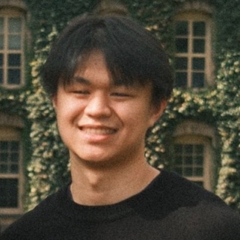

Princeton NLP GroupAug 2026 – Present
Undergraduate Researcher · Advised by Wenhao Chai and Prof. Karthik Narasimhan

B.S.E. Computer Science, Princeton University · Minor in Statistics & Machine Learning
I am currently an undergraduate at Princeton working with the Princeton NLP Group, the Princeton Vision & Learning Lab, and Ludwig Cancer Research.
My current work explores using agentic approaches to improve video reasoning in multimodal LLMs, and I hope to create richer and more efficient 3D/4D visual representations in the future. Recently, I have also become very interested in spiking neural networks and symbolic distillation for large AI models. More broadly, I am interested in computer vision, agents, bio-inspired AI, chemical AI, robotics, AI interpretability, and synthetic data generation. Although my main focus is pure AI research, I am also very passionate about circular resource recovery and sustainability for AI data center water and electricity usage. While AI development is a fascinating field, it cannot come at the cost of our planet or our own livelihood.
* Equal contribution